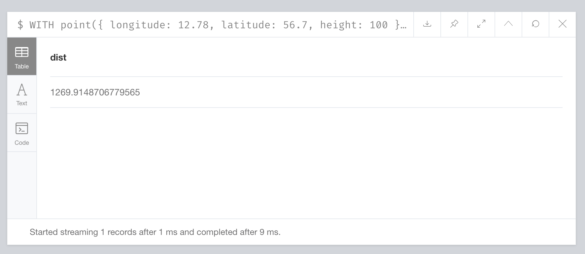

Neo4j Advanced Features
1. Neo4j - Aggregation Function
Cypher aggregation is different from other languages. For example, aggregation is implemented by group by in SQL. In cypher, the aggregation function is used by default.
1.1 COUNT:
It returns the number of rows.
Syntax
COUNT(value)
Step 1 - Open Neo4j browser app.
Create 4 nodes in Neo4j database.
CREATE (Alice:employee{name: "Alice", sal: 110000, City: "Fremont"})
CREATE (Bob:employee{name: "Bob", sal: 150000, City: "Sunnyvale"})
CREATE (Chole:employee{name: "Chole", sal: 130000, City: "Cupertino"})
CREATE (David:employee{name: "David", sal: 135000, City: "Hayward"})
Step 2 - Type the command at the dollar prompt in the browser.
MATCH (n:employee)
WHERE n.sal>120000
RETURN COUNT(n)
Step 3 - Count the employees whose salary is greater than 120000.
1.2 MAX:
It returns the maximum value from a set of rows.
Syntax
MAX(property-name)
Step 1 - Open Neo4j browser app.
Step 2 - Type the command at the dollar prompt in the browser.
MATCH (n:employee) RETURN MAX(n.sal)
Step 3 - Get the maximum salaries of the employees.
1.3 MIN:
It returns the minimum value from a set of rows.
Syntax
MIN(property-name)
Step 1 - Open Neo4j browser app.
Step 2 - Type the command at the dollar prompt in the browser.
MATCH (n:employee) RETURN MIN(n.sal)
Step 3 - Get the minimum salaries of the employees.
1.4 SUM:
It returns the summation value from a set of rows.
Syntax
SUM(property-name)
Step 1 - Open Neo4j browser app.
Step 2 - Type the command at the dollar prompt in the browser.
MATCH (n:employee) RETURN SUM(n.sal)
Step 3 - Get the summation salaries of the employees.
1.5 AVG:
It returns the average value from a set of rows.
Syntax
AVG(property-name)
Step 1 - Open Neo4j browser app.
Step 2 - Type the command at the dollar prompt in the browser.
MATCH (n:employee) RETURN AVG(n.sal)
Step 3 - Get the average salaries of the employees.
2. Neo4j - String Function
Like SQL, Neo4j CQL provides a set of string functions to get the required results in CQL Queries.
2.1 UPPER:
It is used to change all letters into upper case letters.
Syntax
UPPER (input-string)
Step 1 - Open Neo4j browser app.
Create 5 nodes in Neo4j database.
CREATE (Alice:player{name: "Alice Brown", YOB: 1995, POB: "Cupertino"})
CREATE (Bob:player {name: "Bob Wilson", YOB: 1991, POB: "Fremont"})
CREATE (Chole:player {name: "Chole Smith", YOB: 1997, POB: "Hayward"})
CREATE (David:player {name: "David Hilton", YOB: 1994, POB: "Sunnyvale"})
CREATE (Eva:player {name: "Eva Jones", YOB: 1992, POB: "Pleasanton"})
Step 2 - Type the command at the dollar prompt in the browser.
MATCH (n:player)
RETURN UPPER(n.name), n.YOB, n.POB
Step 3 - Get the result, converted the names of all the players into upper case.
2.2 LOWER:
It is used to change all letters into lower case letters.
Syntax
LOWER (input-string)
Step 1 - Open Neo4j browser app.
Step 2 - Type the command at the dollar prompt in the browser.
MATCH (n:player)
RETURN LOWER(n.name), n.YOB, n.POB
Step 3 - Get the result, converted the names of all the players into lower case.
2.3 SUBSTRING:
It is used to get substring of a given String.
Syntax
SUBSTRING(input-string, startIndex, endIndex)
Step 1 - Open Neo4j browser app.
Step 2 - Type the command at the dollar prompt in the browser.
MATCH (n:player)
RETURN SUBSTRING(n.name,0,5), n.YOB, n.POB
Step 3 - Get the substring of the names of all the players.
3. Neo4j - Spatial Function
3.1 Neo4j Spatial Concept:
The spatial project is a plug-in of the graph database Neo4j. It maps spatial data to the graph model and stores objects and relationships as vertices and edges in the graph model. Therefore, Neo4j has the functions of spatial data import, storage and query. The geographical elements supported by Neo4j spatial follow the specifications of OpenGIS, including simple elements such as point, line-string, polygon, multipoint, and multi-line string. Neo4j spatial mainly integrates Lucene's index library by using R-tree as spatial index. Supported spatial queries include cover, cover by, contain, intersect, etc..
To sum up, Neo4j has great advantages in the analysis of graph data model, such as proximity search, path analysis and other specific types of applications.
3.2 Neo4j Spatial- Distance
It returns a floating point number representing the geodesic distance between two points in the same Coordinate Reference System (CRS).If the points are in Cartesian CRS (2D or 3D), then the units of the return distance will be the same as that of the point calculated using Pythagorean theorem.If the points are in WGS-84 CRS (3D), then the return distance is in meters.
3.2.1 2D points
Syntax
distance(point1, point2)
Step 1 - Open Neo4j browser app.
Step 2 - Type the command at the dollar prompt in the browser.
WITH point({ x: 2.3, y: 4.5, crs: 'cartesian' }) AS p1, point({ x: 1.1, y: 5.4, crs: 'cartesian' }) AS p2
RETURN distance(p1,p2) AS dist
Step 3 - Get the result, the distance between two 2D points in the CRS.
3.2.2 3D points
Syntax
distance(point1, point2，point3)
Step 1 - Open Neo4j browser app.
Step 2 - Type the command at the dollar prompt in the browser.
WITH point({ longitude: 12.78, latitude: 56.7, height: 100 }) AS p1, point({ latitude: 56.71, longitude: 12.79, height: 100 }) AS p2
RETURN distance(p1,p2) AS dist
Step 3 - Get the result, the distance between two 3D points in the CRS.

Previous
Next